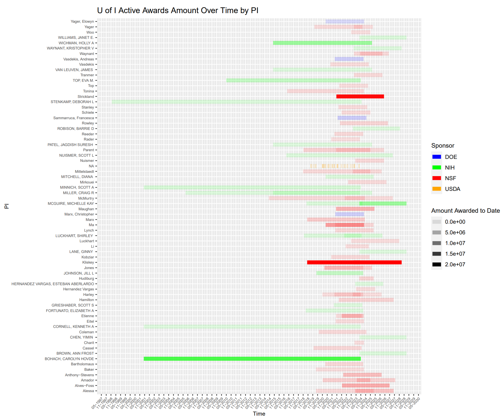

Code
knitr::opts_chunk$set(echo=FALSE, warning=FALSE, error=FALSE, message=FALSE)knitr::opts_chunk$set(echo=FALSE, warning=FALSE, error=FALSE, message=FALSE)You may be wondering what this midterm assignment addresses… Well, in this workup, I will evaluate how the University of Idaho compares to neighboring institutions in terms of grants awarded and productivity from those awards.
I will be evaluating award/grant data from four federal sponsors: The National Science Foundation (NSF), The National Institutes of Health (NIH), The Department of Energy (DOE), and The US Department of Agriculture (USDA).
Why is the question or purpose important? We shall find out!
1. Department of Agriculture (NIFA) A snippet of the awards from USDA pertaining to UI are included below. See the data dictionary here Figure 1. This includes agricultural related grants all the way from the early 2000s.
| Award.Date | Grant.Number | Proposal.Number | Grant.Title | State.Name | Grantee.Name | Award.Dollars | Program.Name | Program.Area.Name |
|---|---|---|---|---|---|---|---|---|
| 9/30/2010 | 2010-48679-01200 | N/A | N/A | IDAHO | SAES - UNIVERSITY OF IDAHO | 7495 | N/A | N/A |
| 9/30/2009 | 2009-48679-01200 | N/A | N/A | IDAHO | SAES - UNIVERSITY OF IDAHO | 6813 | N/A | N/A |
| 9/30/2008 | 2008-48679-01200 | N/A | N/A | IDAHO | SAES - UNIVERSITY OF IDAHO | 8524 | N/A | N/A |
| 9/30/2003 | 2003-48604-01200 | N/A | N/A | IDAHO | SAES - UNIVERSITY OF IDAHO | 1097 | N/A | N/A |
| 9/30/2010 | 2010-48024-01200 | N/A | N/A | IDAHO | SAES - UNIVERSITY OF IDAHO | 11997 | N/A | N/A |
| 9/30/2009 | 2009-48024-01200 | N/A | N/A | IDAHO | SAES - UNIVERSITY OF IDAHO | 14990 | N/A | N/A |
2. Department of Energy (DOE) A snippet of these awards (all awards, not just U of I’s) are included below. 
The data dictionary for this extensive data set can be accessed here Figure 2. This data is not restricted to a particular award recipient.
3. National Institutes of Health (NIH) This data can be obtained from an Application Programming Interface (API).
Before this assingmnet, I had never heard of APIs. Apparently, they are fancy tools that allow different software components to communicate with each other.
Barrie graciously provided code to help us access this information. Again, a snippet is included. 
You can access this data’s dictionary here Figure 3. This is quite a large data set with information on awards (related to health sciences) recieved by BSU and U of I between 2013-2024. Of note, this is an example of heirarchal data- some cells appear to have no values in them becuase there are actually multiple variables within those cells. It gets complex!
4. National Science Foundation (NSF) The NSF also has an API, and the following code pulled down awards to the University of Idaho into a data frame called NSFtoUI. A snapshot of it is shown here. 
See the data dictionary here Figure 4. Briefly, this data set gives information on NSF grants awarded to the University of Idaho from 1975 to current day.
Provide a visualization that shows our active awards from each sponsor. I need to see their start date and end date, the amount of the award, and the name of the Principal Investigator. I’m really interested in seeing how far into the future our current portfolio will exist. Are there a bunch of awards about to expire? Are there a bunch that just got funded and will be active for a while? Does this vary across sponsors?
To address this question, I am first going to play around with manipulating one dataset and going from there.
Start_Date End_Date PI Amount_Awarded_to_Date Sponsor
1 2021-12-01 2024-11-30 Sammarruca, Francesca 1812000 DOE
2 2021-09-01 2024-08-31 Marx, Christopher 1404162 DOE
3 2021-08-15 2024-08-14 Vasdekis, Andreas 1519359 DOE
4 2020-09-01 2024-08-31 Yager, Elowyn 603903 DOETable 1. Cleaned DOE data
Ok. So, I have a new data frame to plot that only includes active awards at the U of I with the necessary variables. Hopefully, I will make the other data frames similarly and then combine and graph.

Figure 1. This figure is an example of what I want to expand to all the data sets. Alternatively, I could color by sponsor when I will eventually be using multiple.

Figure 2. This figure is a similar premise to Figure 1, however, now I am coloring by sponsor.
First up, I am going to manipulate and make new data sets for all sponsors. Then I will combine them all and plot a summary figure.
Start_Date End_Date PI Amount_Awarded_to_Date Sponsor
1 2024-04-01 2027-03-31 Waynant 456051.00 NSF
2 2024-03-01 2025-08-31 Hudiburg 1000000.00 NSF
3 2023-12-01 2027-11-30 Amador 1179977.00 NSF
4 2023-11-01 2025-10-31 Hernandez Vargas 250000.00 NSF
5 2023-10-01 2027-09-30 Alessa 2435509.00 NSF
6 2023-10-01 2026-09-30 Nuismer 664468.00 NSFTable 2. Cleaned NSF data
Start_Date End_Date PI Amount_Awarded_to_Date Sponsor
1 2024-03-11 2029-01-31 MCGUIRE, MICHELLE KAY 1799999 NIH
2 2024-03-11 2029-01-31 WILLIAMS, JANET E. 388362 NIH
3 2024-03-11 2029-01-31 CHEN, YIMIN 112230 NIH
4 2024-03-11 2029-01-31 LANE, GINNY 106232 NIH
5 2024-03-11 2029-01-31 MCGUIRE, MICHELLE KAY 300000 NIH
6 2024-03-11 2029-01-31 MCGUIRE, MICHELLE KAY 630754 NIHTable 3. Cleaned NIH data
Start_Date End_Date Amount_Awarded_to_Date Sponsor PI
1 2024-02-16 2024-02-16 20897 USDA NA
2 2022-11-22 2022-11-22 52242 USDA NA
3 2021-12-02 2021-12-02 52242 USDA NA
4 2020-12-22 2020-12-22 52242 USDA NA
5 2020-05-18 2020-05-18 52242 USDA NA
6 2019-02-19 2019-02-19 52242 USDA NATable 4. Cleaned USDA data
Alrighty, now time to bind all the new data sets together and plot.

Figure 3. This figure shows the PIs of currently active awards (to the best of my knowledge) here at the University of Idaho and their estimated amounts. Now, to be transparent, the USDA data did not have an end date in their data set, so I manually inputted the end to be the same as the beginning. Also, the USDA did not have PI names mentioned. Lastly, because the USDA also did not give us the current status of the grant, I only included those that began within in the past 5 years.
Further limitations include that this figure does not address very well how the same PIs with various grants are displayed.
Regardless, hopefully this figure is informative and helpful, at least for the NIH, NSF, and DOE!
What is the proportional representation of new awards to the UI from these various sources over the past 5 to 10 years? Are there any trends that are encouraging or discouraging?
Again, to be begin to address this question, I am going to start with using just one data set for practice.

Figure 4. This figure captures the number of new grants the DOE awarded to the University of Idaho during the past 10 years.
As we can see, there is not much from the past 10 years!
I am first going to filter and make separate data frames for all sponsors and then combine and graph. (I am using a similar approach to answering Question 1.)
# A tibble: 2 × 3
Year Count Sponsor
<dbl> <int> <chr>
1 2020 1 DOE
2 2021 2 DOE Table 5. DOE new grants count
# A tibble: 6 × 3
Year Count Sponsor
<dbl> <int> <chr>
1 2014 8 NSF
2 2015 12 NSF
3 2016 6 NSF
4 2017 12 NSF
5 2018 10 NSF
6 2019 7 NSF Table 6. NSF new grants count
# A tibble: 6 × 3
Year Count Sponsor
<dbl> <int> <chr>
1 2014 5 NIH
2 2015 35 NIH
3 2016 10 NIH
4 2017 4 NIH
5 2018 18 NIH
6 2019 8 NIH Table 7. NIH new grants count
# A tibble: 6 × 3
Year Count Sponsor
<dbl> <int> <chr>
1 2014 18 USDA
2 2015 33 USDA
3 2016 29 USDA
4 2017 23 USDA
5 2018 22 USDA
6 2019 27 USDA Table 8. USDA new grants count
Now let’s combine the individual, mutated data frame for each sponsor and put them altogether for a visualization.

Figure 5. This figure shows the approximate trends of new grants received by the University of Idaho from various sponsors in the last 10 years.
Limitations include that the USDA data set did not have specifications denoting whether the awards were new or continuing, therefore, I was only able to go off the award date for being in the last 10 years and had to make the assumption all were new. This is most likely not the case, so the orange line should be interpreted with caution. In general, the USDA actually seems to be on the decline, which would be concerning given the type of school the University of Idaho is. As for the DOE, it seems we are on the rise during the past couple years. The NSF seems to be steady at the moment. Meanwhile, the NIH data was interesting. Upon updating this document, grants considered “new” a week previously were not considered “new” anymore. Therefore, I just included all grants from the past 10 years. All in all, this is an interesting figure to address general trends within the last decade.
How is UI performing with these sponsors when compared to the following peer institutions: Boise State University, Idaho State University, Montana State University, University of Montana, and Washington State University?
Note that “performing” can mean a variety of different things. You must choose your metrics of performance and justify them.
Let’s start by fetching the data. I am going to use the API sources for this question (NIH and NSF).
After manipulating the API addresses, I now have data sets of NIH and NSF updated to include all 6 schools.
Now I am going to start manipulating the data.
Organization Amount_Awarded Sponsor
1 Montana State University 685033.00 NSF
2 Montana State University 184781.00 NSF
3 Idaho State University 590780.00 NSF
4 Boise State University 740130.00 NSF
5 Washington State University 473866.00 NSF
6 Boise State University 486552.00 NSFTable 9. New NSF data from all schools.
I am going to rinse and repeat for NIH.
Organization Amount_Awarded Sponsor
1 UNIVERSITY OF MONTANA 586559 NIH
2 UNIVERSITY OF IDAHO 2354626 NIH
3 UNIVERSITY OF IDAHO 461621 NIH
4 UNIVERSITY OF IDAHO 162320 NIH
5 UNIVERSITY OF IDAHO 153322 NIH
6 UNIVERSITY OF IDAHO 300000 NIHTable 10. New NIH data from all schools.
Great! I have 2 data frames ready to put into my next visualization to address Question 3.

Figure 6. This figure shows the award amounts of the active grants of each institution (and their various locations) sponsored by the NIH (coral) and NSF (blue).
I used the measures of active awards and their relative amounts from these sponsors to address how the U of I compares to neighboring institutions. Although not complex, these performance attributes capture important metrics nonetheless.
The limitations of this figure are first and foremost that it only addresses grants from the NIH and NSF, not the USDA and DOE. I chose to do this out of sake for convenience. Also, for the NIH, this time I added the indirect and direct costs to compute the award amount (in Figure 1., I only used direct cost). Further, because of the discrepant data sources, some of the institutions have multiple locations also shown in this figure. Although I could agglomerate the data so each institution has one reference point, I actually think this may be insightful to see how the smaller institutions compare to the larger ones.
All in all, from this figure, we can see the U of I compares well in the realm of NSF grants. This is not so much the case for the NIH grants.
In conclusion, this stuff is messy indeed! Throughout my three main visualizations, I found out what active grants the U of I has and how those compare across sponsors. I then expanded that information to compare specific sponsors to various other schools nearby. In general, we need more DOE and NIH work to be done. USDA and NSF are doing well, but we want to get back on the rise again (at least with the USDA).
I realized through this work that, as Barrie has alluded to, it indeed does take a lot of time going through these different data and finding what is similar/comparable and cleaning those aspects of the data in order to put visualizations together.
I think it would be interesting to continue to explore and see how the U of I compares to other institutions with the other sponsors, and I wonder how data scientists wrap their heads around all these details!
| Attribute | Description | Type |
|---|---|---|
| Award Date | Date when award was granted | Ordinal |
| Grant Number | Unique ID for each grant | Item |
| Proposal Number | N/A for all | NA |
| Grant Title | N/A for all | NA |
| State Name | State of award (all = IDAHO) | Categorical |
| Grantee Name | Tells who received the grant (all = U of I) | Categorical |
| Award Dollars | Award amount | Quantitative |
| Program Name | Name of program grant will be used for (some are N/A) | Categorical |
| Program Area Name | Name of program (some have N/A) | Categorical |
| Attribute | Description | Type…3 | …4 | …5 | …6 | Type…7 |
|---|---|---|---|---|---|---|
| Award Number | ID of award | Item | NA | NA | NA | Ordinal |
| Title | Title of award | Item | NA | NA | NA | Item |
| Institution | Organization to whom award was granted. Some are universities, but others are companies and laboratories (many are included, not just U of I) | Item | NA | NA | NA | Ordinal |
| City | City of that organization (many- not restricted to Moscow) | Item | NA | NA | NA | Ordinal |
| State | State of that organization (many, not restricted to ID) | Item | NA | NA | NA | Ordinal |
| Zip Code | Zipcode of that organization | Item | NA | NA | NA | Quantitative |
| PI | Principle Investigator to whom award was granted | Item | NA | NA | NA | Quantitative |
| Status | Tells if award is ongoing or not (seems that only active/current awards are included in this data set) | Categorical | NA | NA | NA | Categorical |
| Action Type | Tells if the award is new or a renewal | Categorical | NA | NA | NA | Item |
| Org Code | Unique code for the award | Item | NA | NA | NA | Ordinal |
| SBIR/STTR | Tells if the awards are SBIR (Small Business Innovation Research) or STTR (Small Business Technology Transfer) programs. Neither = N/A | Categorical | NA | NA | NA | Quantitative |
| Program Office | Tells what DOE program office oversees the award | Categorical | NA | NA | NA | NA |
| Award Type | Tells type of award (grant, interagency agreement, cooperative agreement) | Categorical | NA | NA | NA | NA |
| PM | Project Manager (appear to be different people than PI) | Item | NA | NA | NA | NA |
| Start Date | Award start date | Ordinal | NA | NA | NA | NA |
| End Date | Award end date | Ordinal | NA | NA | NA | NA |
| SBIR Phase | If applicable, phase of SBIR | Categorical | NA | NA | NA | NA |
| Most Recent Award Date | Date of most recent award | Ordinal | NA | NA | NA | NA |
| Amount Awarded to Date | Money given as of most recent award date | Quantitative | NA | NA | NA | NA |
| Amount Awarded this FY | Amount awarded this fiscal year | NA | NA | NA | NA | NA |
| Program Area | What type of program the award will be used towards | Item | NA | NA | NA | NA |
| Register Number | Unique code for the award | Item | NA | NA | NA | NA |
| UEI | Unique code for the award | Item | NA | NA | NA | NA |
| DUNS | Unique code for the award | Item | NA | NA | NA | NA |
| Institution Type | Type of institution that has received the award | Categorical | NA | NA | NA | NA |
| Abstract | Abstract of what award is proposed to be used for | Item | NA | NA | NA | NA |
| Attribute | Description | Type |
|---|---|---|
| appl id | Unique ID | Item |
| subproject id | Some awards have subproject unique ID values | Item |
| fiscal year | Year of award | Ordinal |
| project num | Project number (seems to be a grouping variable) | Categorical |
| project serial num | Project number (seems to be a grouping variable) | Categorical |
| award type | Type of award (1, 2, 3, 4, 4N, 5) | Categorical |
| activity code | Code for award | Categorical |
| award amount | Amount alloted for award | Quantitative |
| is active | Tells whether the award is ongoing or not (TRUE/FALSE) | Categorical |
| principal investigators | No values | NA |
| contact pi name | Names of PIs | Item |
| program officers | No values | NA |
| agency ic fundings | No values/unsure | NA |
| cong dist | Appears to be a subset of code for awards | Categorical |
| spending categories | No values | NA |
| project start date | Start date | Ordinal |
| project end date | End date | Ordinal |
| opportunity number | Appears to be a subset of code for awards | Categorical |
| award notice date | Date of notification of award | Ordinal |
| is new | Tells whether the award is new or not (TRUE/FALSE) | Categorical |
| mechanism code dc | Code for mechanism | Categorical |
| core project num | ID for award | Item |
| terms | Keywords grant proposes to address with award | Item |
| pref terms | Preferred keywords | Item |
| abstract text | Abstract | Item |
| project title | Title of project | Item |
| phr text | Some awards have project narrative text | Item |
| spending categories desc | Some awards have spending categories | Item |
| agency code | All = NIH | Categorical |
| covid response | No values/unsure | NA |
| arra funded | All = N | Categorical |
| budget start | Start date of budget | Ordinal |
| budget end | End date of budget | Ordinal |
| cfda code | Number assigned in the awarding document funded by the Federal government (similar to NSF) | Item |
| funding mechanism | Mechanism for funding (similar to DOE) | Categorical |
| direct cost amt | Cost directly of award | Quantitative |
| indirect cost amt | Cost indirectly of award | Quantitative |
| project detail url | Website of project details | Item |
| date added | Date award added | Ordinal |
| organization org name | Organization of awardee (either U of I or BSU) | Categorical |
| organization city | No values/unsure | NA |
| organization country | No values/unsure | NA |
| organization org city | City of University (either Moscow or Boise) | Categorical |
| organization org country | Country = USA | Categorical |
| organization org state | State = ID | Categorical |
| organization org state name | No values | NA |
| organization dept type | Department type being awarded (some have) | Categorical |
| organization fips country code | No values | NA |
| organization org duns | No values | NA |
| organization org ueis | No values | NA |
| organization primary duns | Seems to be some grouping variable | Categorical |
| organization primary uei | Seems to be some grouping variable | Categorical |
| organization org fips | All = US | Categorical |
| organization org ipf code | Seems to be some grouping variable | Categorical |
| organization org zipcode | Zipcode of organization | Categorical |
| organization external org id | Seems to be some grouping variable | Categorical |
| project num split appl type code | Seems to be values 1-10 | Categorical |
| project num split activity code | Seems to be some grouping variable | Categorical |
| project num split ic code | Seems to be some grouping variable | Categorical |
| project num split serial num | Seems to be some grouping variable | Categorical |
| project num split support year | Not sure | Categorical |
| project num split full support year | Similar to previous | Categorical |
| project num split suffix code | Not sure (only some values have) | Categorical |
| agency ic admin code | Appears to be the same as project_num_split.ic_code | Categorical |
| agency ic admin abbreviation | Some sort of abbreviation | Categorical |
| agency ic admin name | Agency name (health related) | Categorical |
| organization type name | Type of organization | Categorical |
| organization type code | All = 10 | Categorical |
| organization type is other | Extends organization type (TRUE/FALSE) | Categorical |
| full study section srg code | Seems to be some grouping variable | Categorical |
| full study section srg flex | Unsure (only some values have) | Categorical |
| full study section sra designator code | Some sort of grouping variable code | Categorical |
| full study section sra flex code | Unsure (some have letters, some numbers) | Categorical |
| full study section group code | Some sort of grouping code | Categorical |
| full study section name | Section name | Categorical |
| Attribute | Description | Type |
|---|---|---|
| abstractText | Text of abstract | Item |
| agency | Agency awarding (for all = NSF) | Categorical |
| awardAgencyCode | All NSF codes appear to be 4900 | Categorical |
| awardeeAddress | Address of awardee (all of these = U of I) | Item |
| awardeeCity | City of awardee | Item |
| awardeeCountryCode | Country of awardee | Item |
| awardeeDistrictCode | District code of awardee (all = ID01) | Categorical |
| awardeeName | Name of awardee (all = Regents of U of I) | Item |
| awardeeStateCode | State of awardee | Item |
| awardeeZipCode | Zip code of awardee | Item |
| cfdaNumber | Number assigned in the awarding document funded by the Federal government | Item |
| coPDPI | Unsure/no values | NA |
| ueiNumber | Code given to U of I awards (all are the same in this data set) | Item |
| estimatedTotalAmt | Estimated total amount of award | Quantitative |
| fundsObligatedAmt | Amount NSF is obligated to give | Quantitative |
| fundAgencyCode | Same code as above awardAgencyCode | Categorical |
| fundProgramName | Various program names | Item |
| id | Unique ID for each award | Item |
| parentUeiNumber | Unsure/no values | NA |
| pdPIName | Principle Investigator | Item |
| perfAddress | Preferred address of awardee (most are U of I, some elsewhere) | Item |
| perfCity | Preferred city | Item |
| perfCountryCode | Preferred country code | Item |
| perfDistrictCode | Preferred discrict code | Item |
| perfLocation | Preferred location (some prefer elsewhere- like Idaho Falls) | Item |
| perfStateCode | Preferred state code | Item |
| perfZipCode | Preferred zip code | Item |
| piEmail | Email of PI | Item |
| piFirstName | First name of PI | Item |
| piLastName | Last name of PI | Item |
| piMiddeInitial | Middle initial of PI | Item |
| poEmail | Email of Program Officer | Item |
| poName | Name of Program Officer | Item |
| poPhone | Phone of PO | Item |
| primaryProgram | Unsure/no values | NA |
| date | Current data? | Ordinal |
| startDate | Start date of award | Ordinal |
| expDate | End data of award | Ordinal |
| title | Title of award | Item |
| transType | Type of grant (continuing, standard, fellowship…) | Categorical |
| awardee | Again, here = regents of U of I for all | Item |
| publicationResearch | Unsure/no values | NA |
| projectOutComesReport | Some have a snippet on the findings thus far | Item |